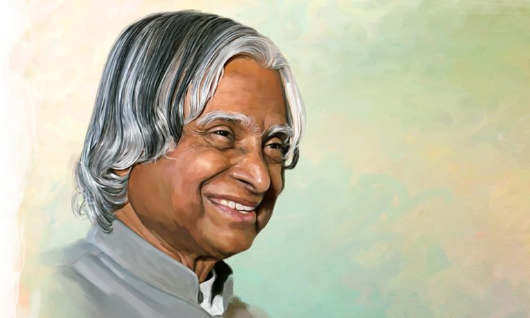

Dr A.P.J ABDULKALAM
A missle man of Indian history

A brief summary of Abdulkalam's journey
Biography
APJ Abdulkalam,popularly known as the"Missle man of india",was one of the most belved and respected figures in indian history.
Born on october 15,1931,in Rameshwaram,Tamilnadu.Kalam was a scientist,engineer and politician who played a vital role in the
development of indian's missile an space programs.
History
Abdulkalam was born to a tamil muslim family in the small town of located on an island of the southern coast of india.
His father-Jainulabdeen,was a boat owner and imam at a local mosque,while his mother-Ashiamma,was a housewife.kalam was
the youngest of four siblings,and his family lived in relative poverty.
Career and Achievements
- kalam's career as a scientist began in earnest in 1965 when he joined the indian space research organisation(ISRO).
- In 1969,APJ Abdulkalam was transferrento the Defence Research and Development Laboratory(DRDL) in hydrabed,where he worked
on the first development of india's first satellite launch vehicle(SLV-III).
- kalam's biggest achievement,however,cae in 1983 when he became the director of DRDO's Integreted Guided Missile Development
Programme(IGMDP).
- Under his leadership,the programme developed five missile systems,including the Agni,Prithvi,Akash,Nag and Trishul missiles.
- APJ Abdulkalam frequently spoke at schools and universities,inspiring students with his words and encouraging them to pursue
their dreams.Kalam also authored several books,including his autobigraphy "Wings of Fire",whuch became a besteller in india.
click here to more informations